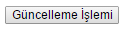
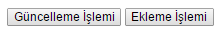
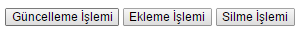
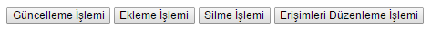

Permission(Yetkiler) Kütüphanesi
Sayfalara veya nesnelere erişim yetkilerinin düzenlemesi için oluşturulumuş bir sınıftır.
Nesne Erişim Yetkilerini Düzenlemek
Nesnelere erişim yöntemi belirlemek için kullanılır. 3 parametresi vardır. Rol Id, İşlem, Nesne.
| Parametre | Anlamları |
|---|---|
| 1. Parametre = Rol Id | Kullanıcıların rol id'si. |
| 2. Parametre = İşlem | Berlirlenen yetkiler. |
| 3. Parametre = Nesne | Yetkilere konu olacak nesne. |
Yetki kütüphanesi Config/Permission.php dosyası ile birlikte kullanılır bu yüzden bu dosyanın içeriğinide incelemekte fayda görüyoruz.
Yukarıdaki ayarlarda 1,2,3,4,5,6 gibi rakamlarla birlikte any, all, perm, noperm gibi kavramlar görüyorsunuz. Bunların ne olduklarını açıklayalım.$config ['Permission' ]['process' ] =array ('1' =>'any' ,'2' =>'any' ,'3' => array('noperm' => array('yetki1', 'yetki2')),'4' => array('perm' => array('yetki3', 'yetki4')),'5' => array('noperm' => array('yetki5', 'yetki6')),'6' =>'all' );
1. Rakamlar
kullanıcıların rol numaralarını ifade eder yukarıda 6 adet id var bu varsayılan adettir siz isterseniz 2 yapabileceğiniz gibi 10 da yapabilirsiniz bu sizin sitenizdeki kullanıcıların rütbesiyle alakalıdır. Örneğin kullanici, admin, super admin, administrator olmak üzere 4 farklı rol olduğunu düşünürsek rol adetide 4 olacaktır 1 en alt yetkiye sahip olan kullanicilari ifade ederken 4 en yüksek yetkili administrator'u ifade edecektir.
2. Yetkiler
any: Hiç bir yetkisi yok demektir.
all: Bütün yetkilere sahip demektir.
noperm=>:Belirlenen nesnelere izin yok demektir. Yetkilerde |y1|y2.. şeklinde yazılacaktır.
perm=>:Belirlenen nesnelere izin var demektir. Yetkilerde |y1|y2.. şeklinde yazılacaktır.
Aşağıdaki örnek uygulamada bir butona erişim yetkisi veren bir örnek yer almaktadır.
< ?phpclass Yekiler {function index() {/* Config/Permission.php ayarlar aşağıdaki gibi kabul edilirse. '1' => 'any', // Rol Id'si 1 olanın hiç bir yetkisi yok. '2' => 'any', // Rol Id'si 2 olanın hiç bir yetkisi yok. '3' => 'noperm=>|silme_islemi', // Rol Id'si 3 olanın silme_islemi için yetkisi yok. '4' => 'perm=>|silme_islemi', // Rol Id'si 4 olanın silme_islemi için yetisi var. */ $role_id = 4;$buton = Form::button('silme_butonu' ,'Silme İşlemi' );echo Permission::process($role_id ,'silme_islemi' ,$buton );/* Sonuç: Buton Rol Id'si 4 olan kullanıcı için görünecekken 1,2 ve 3 Rol Id'li kullanıcı için görünmeyecektir. */ } }
Yetki ayarları dosyasını aşağıdaki gibi düzenleyip bir örnek üzerinde tekrar inceleyecelim.
$config ['Permission' ]['process' ] =array ('1' =>'any' ,'2' =>'any' ,'3' => array('perm' => array('guncelleme_yetkisi'),'4' => array('perm' => array('guncelleme_yetkisi', 'ekleme_yetkisi'),'5' => array('perm' => array('guncelleme_yetkisi', 'ekleme_yetkisi', 'silme_yetkisi'),'6' => array('noperm' => array(erisimleri_duzenleme_yetkisi),'7' =>'all' );
Kodlarımızı aşağıdaki gibi düzenliyoruz.
$role_id = 4;echo Permission::process($role_id ,'guncelleme_yetkisi' , Form::button('guncelleme_butonu' ,'Güncelleme İşlemi' ));echo Permission::process($role_id ,'ekleme_yetkisi' , Form::button('ekleme_butonu' ,'Ekleme İşlemi' ));echo Permission::process($role_id ,'silme_yetkisi' , Form::button('silme_butonu' ,'Silme İşlemi' ));echo Permission::process($role_id ,'erisimleri_duzenleme_yetkisi' , Form::button('erisim_butonu' ,'Erişimleri Düzenleme İşlemi' ));/* $role_id = 1 ise hiç bir buton görünmeyecektir. $role_id = 2 ise hiç bir buton görünmeyecektir. $role_id = 3 ise sadece güncelleme butonu görünecektir.  $role_id = 4 ise hem güncelleme hem de ekleme butonu görünecektir.  $role_id = 5 ise güncelleme, ekleme ve silme butonu görünecektir.  $role_id = 6 ise sadece erişimleri düzenleme butonu görünmeyecektir. $role_id = 7 ise tüm butonlar görünecektir.  */
Sayfa Erişim Yetkilerini Düzenlemek
Sayfalara erişim yöntemi belirlemek için kullanılır. 1 parametresi vardır. Rol Id.
| Parametre | Anlamları |
|---|---|
| 1. Parametre = Rol Id | Kullanıcıların rol id'si. |
Ayarlar yukarıda anlatığımız gibidir. Tek fark nesne adı yerine sayfa ismi kullanılmasıdır.$config ['Permission' ]['page' ] =array ('1' =>'any' ,'2' =>'any' ,'3' => array('noperm' => array('sayfa1', 'sayfa2')),'4' => array('perm' => array('sayfa3', 'sayfa4')),'5' => array('noperm' => array('sayfa5', 'sayfa6')),'6' =>'all' );
Örnek bir uygulama üzerinde kodlarımızı inceleyelim.
$config ['Permission' ]['page' ] =array ('1' => array('perm' => array('anasayfa', 'iletisim', 'hakkimizda'),'2' => array('perm' => array('anasayfa', 'iletisim', 'hakkimizda', 'urunler'),'3' => array('noperm' => array('yonetim_paneli', 'dizin_yonetimi'),'4' => array('noperm' => array('dizin_yonetimi)','5' =>'all' , );
Kodlarımızı aşağıdaki gibi düzenliyoruz.
$role_id = 4;if ( ! Permission::page($role_id )) redirect('yetkiniz_yok' );/* Rol Id'sine göre girilen sayfa yetki sınırları içerisinde ise değer true dönecektir. Yetki sınırları dışında ise false dönecektir. Kodda yapılmak istenende eğer yetkileri dışında bir sayfaya girilmişse yetkiniz_yok.php sayfasına yönlendirilsin. $role_id = 1 ise sadece anasayfa, iletisim ve hakkimizda sayfalarına girebilsin farklı bir sayfa ise yönlendirilsin. $role_id = 2 ise sadece anasayfa, iletisim, hakkimizda ve urunler sayfalarına girebilsin farklı bir sayfa ise yönlendirilsin. $role_id = 3 ise sadece yonetim_paneli ve dizin_yonetimi sayfalarına giremesin ve yönlendirilsin. $role_id = 4 ise sadece dizin_yonetimi sayfasına giremesin ve yönlendirilsin. $role_id = 5 ise tüm sayfalara girebilsin. */